Numerical Scheme for Sediment Transport¶

Following Shi et al. (2012), the finite-volume approach is used for solving the advection-diffusion equation. A modified interface construction method is proposed for the sediment concentration. For time-integration, the third-order Stability-Preserving (SSP) Runge-Kutta scheme. The bed evolution equation is solved directly using the forward differencing. The numerical schemes for solving the Boussinesq equations are kept unchanged. The grid arrangement of variables for solving advection-diffusion is shown in Figure above.
- Space-differencing
The spacing scheme is based on the conservative form of the advection-diffusion equation can be written as,
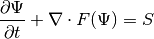
where  and 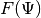 represent the conserved variable and the sediment flux function, given by
and 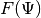 represent the conserved variable and the sediment flux function, given by

and
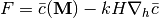
The source term 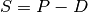. and  are evaluated at the cell center as the major variables defined in FUNWAVE-TVD.
are evaluated at the cell center as the major variables defined in FUNWAVE-TVD.  is calculated at the cell faces as
is calculated at the cell faces as
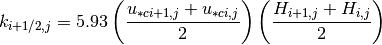
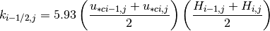
The same algorithm is used for at (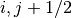) and (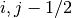) points. The shear velocity  is evaluated as
is evaluated as
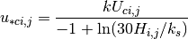
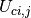 is the total velocity,
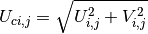
in which ( ) are directly from the Boussinesq solution,
) are directly from the Boussinesq solution,
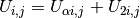
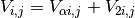
corresponding to the reference velocity 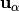 and depth averaged velocity correction 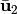 described in Shi et al. (2012).
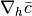 is also evaluated at the cell face as
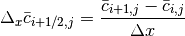

The same scheme is used for the  direction.
direction.
- The source term in (ref{psi}) includes the pickup rate
 and the deposition rate
and the deposition rate  . is
. is - calculated at the cell center using van Rijn’s (1984) formula as mentioned above. Similarly, the deposition rate, , is calculated at the cell center based on Cao et al.’s (1999) formula.
- Time stepping
Time stepping is the same as in FUNWAVE-TVD solver. The third-order Strong Stability-Preserving (SSP) Runge-Kutta scheme for nonlinear spatial discretization (Gottlieb et al., 2001) is adopted for time stepping. The scheme is given by
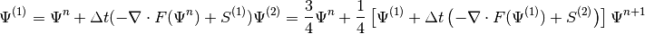
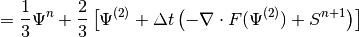
in which 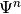 denotes 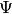 at time level  . 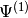 and 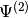 are values at intermediate stages in the Runge-Kutta integration. As is obtained at each intermediate step, the source term needs to be updates using the intermediate value of concentration.
. 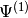 and 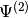 are values at intermediate stages in the Runge-Kutta integration. As is obtained at each intermediate step, the source term needs to be updates using the intermediate value of concentration.
Time steps are the same as the Boussinesq solver, which uses adaptive values based on the Courant-Friedrichs-Lewy (CFL) criterion to ensure model stability.
- Boundary conditions
Boundary conditions used in the sediment module have two types. One is the closed boundary condition which is applied at the cell face, for example,
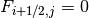
The other is the open boundary condition with zero-gradient condition implemented at ghost cells.